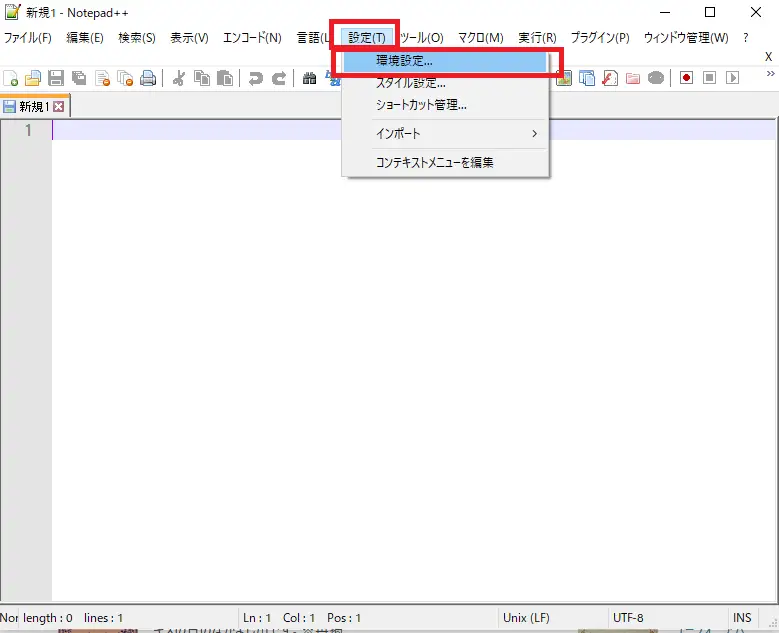
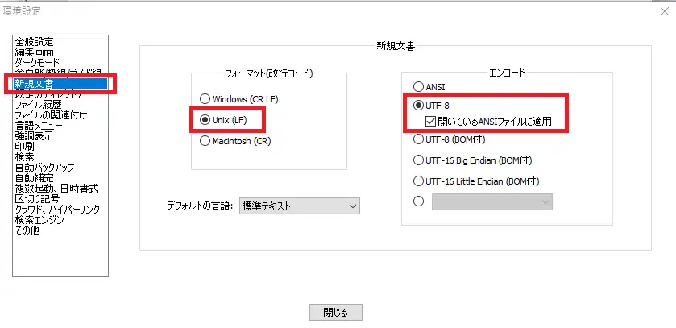
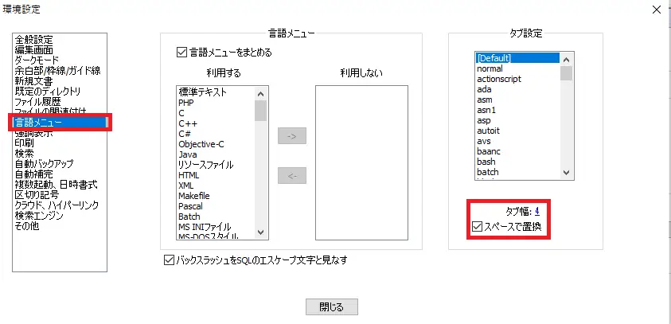
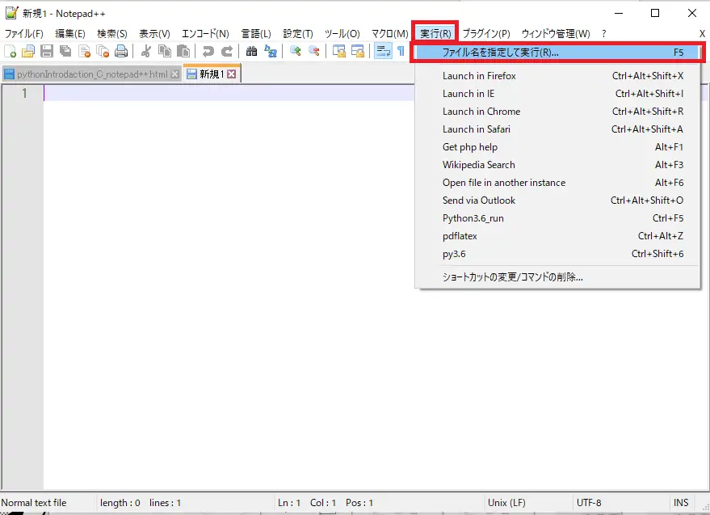
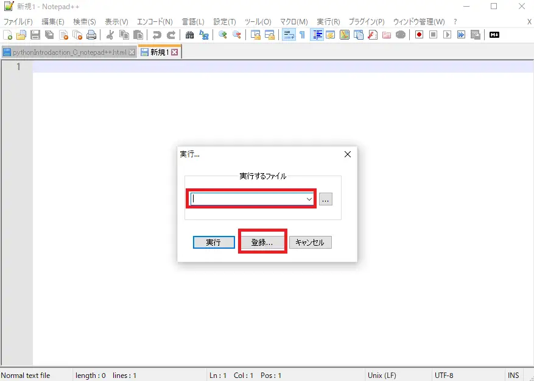
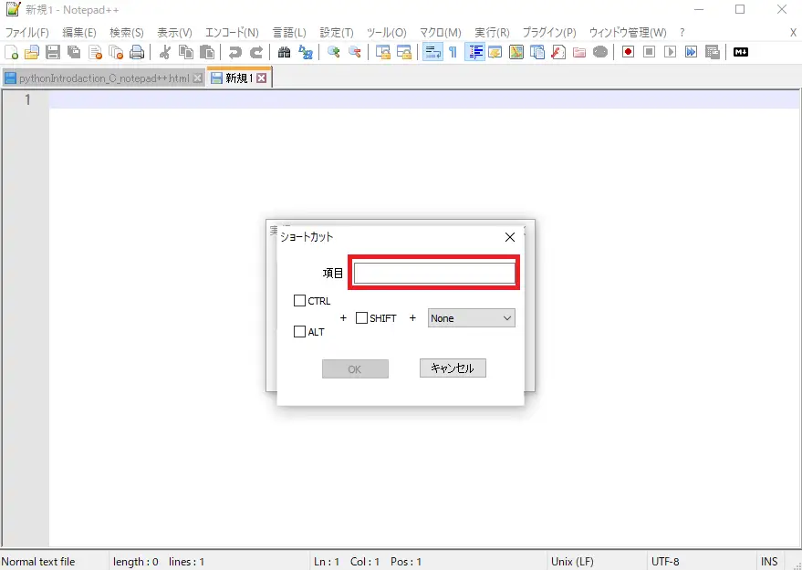

C. テキストエディタ（Notepad++）
プログラミングをする際にはテキストエディタが必要になる。 windowsならメモ帳が標準で入っているが、流石にあれはソースコードを書くのには適さない。 （最低でも行数が分かる機能は欲しい。） フリーのオープンソースで使えるテキストエディタはいくつかある。(大量にある)
| テキストエディタ | 開発元 | 初版 | 対応OS |
|---|---|---|---|
| Visual Studio Code | マイクロソフト | 2015 | Windows 7以降、macOS 10.8以上、Linux、web |
| Atom | GitHub | 2014 | Windows 7以降、macOS 10.8以上、Linux |
| Vim | Bram Moolenaar | 1987 | クロスプラットフォーム |
| Emacs | David A. Moon, Guy L. Steele Jr. | 1976 | クロスプラットフォーム、Unix系 |
| Notepad++ | ドン・ホ | 2003 | Windows Vista 以降 |
| TeraPad | 寺尾進 | 1999 | Windows |
Notepad++のインストール
[参考]Notepad++の使い方 | ぼくらのハウツーノート
公式サイトのDownloadメニュー（https://notepad-plus-plus.org/downloads/）に移動する。 欲しいバージョンを選んでインストーラーをダウンロードする（2022/01時点だと8.2.1が最新）。 インストーラーを起動し、インストールする。 インストールオプションが選択できると思うので、Localization内の日本語を選択する。
やっておきたいNotepad++の設定
- 日本語化
- デフォルト文字コード設定（UTF-8 BOMなし）
- 制御文字の表示
- タブをスペース4つに
- python実行ショートカットキーの設定
python実行ショートカットキーの設定
Pythonのスクリプトファイルを実行するにはコマンドプロンプトを開き、 作業ディレクトリまで移動した後（cd ディレクトリ）に 「python スクリプトファイル名.py」を入力することで実行できた。 作業ディレクトリまでの移動は一度行ってしまえば、その後は行う必要はないが、 「python スクリプトファイル名.py」の入力は面倒だと感じるだろう。 （コマンドプロンプトの入力補助機能として、矢印キーの上↑を押せば前の入力を呼び出せる為、 スクリプトファイル名をいちいち入力する必要はない。 しかし、アクティブなウィンドウをテキストエディタからコマンドプロンプトに変えるのが 面倒なのだ。NotePad++からPythonを直接実行できれば、 それはもう統合開発環境に等しい機能を有することになるだろう。）
やり方としてbatファイルを作成し、それをNotepad++に読み込ませるか、 batファイルに書く処理をそのままショートカットキーに登録するかの2つがある。 （他にもあるかも。） ここでは後者を紹介する。
「実行」メニュー内の「ファイル名を指定して実行」をクリック。 実行するファイルの箇所に入力欄があると思うので、 予め入っていたものは削除に下記のどちらかをコピペでもして入力する。
- cmd /k cd /d $(CURRENT_DIRECTORY) & python $(FULL_CURRENT_PATH) & ECHO. & PAUSE & EXIT
- cmd /k cd /d $(CURRENT_DIRECTORY) & python $(FULL_CURRENT_PATH) & ECHO. & TIMEOUT 30 & EXIT
入力するコマンドを2種類紹介したがそれぞれの挙動を説明する。 （私も把握していないのでコマンドについての詳細は説明しない。 詳しく学びたいなら コマンドプロンプトの使い方 | Let'sプログラミング ）
- スクリプト実行後、何かしらのキー入力が行われるまでコマンドプロンプトを開いたままにする。
- スクリプト実行後、30秒後に自動的にコマンドプロンプトを閉じる。 あるいは何かしらのキー入力が行われるても閉じる。
[参考] 各種設定画面
「設定」ツールバー内の「環境設定」をクリックする。

環境設定ウィンドウが開くので、その左側のメニューから「新規文章」を選択する。 ここでは、改行コードを"Unix (LF)"とし、エンコードを"UTF-8"に指定する。 なお、改行コードは"windows (CR LF)"でも問題ない。

次に「言語メニュー」内でタブをスペース4つに指定する。

設定が終了したら環境設定ウィンドウを閉じる。 次に、Pythonをショートカットキーで実行できるように設定する。 「実行」ツールバー内の「ファイルを指定して実行」をクリックする

入力欄に前述した"cmd …"コマンドをコピペし「登録」をクリックする。

ショートカットキーを登録する。 「項目」はショートカットの名称を入力する。 （例えば"run_python"とか。何でもよい。） シュートカットキーを選択し「OK」をクリックすれば設定は終了である。 （"F5"キーで実行させているのをよく見かけるが、自身が分かりやすいキーで良いだろう。 私の場合は【Ctrl】+【Shift】+【9】でpython3.9が実行されるようにしてある。） なお、「実行」ツールバーをクリックした際にデフォルトで登録されているショートカットキーの一覧が 表示される（【Alt】+【F1】でGet PHP helpなど）が、自作のショートカットキーを登録するときは これらのデフォルトのショートカットキーとの重複は避けた方が良いだろう。

ショートカットキーが正常に動作するか確認しておく。 「言語」ツールバーをクリックし、"Python"を選択する。 これにより単語の強調表示が行われるようになり、 スクリプトファイルの保存時に拡張子が自動的に".py"となる。 print('SHORT CUT KEY TEST')とか書いて、ファイルを保存する。 ファイル保存は【Ctrl】+【s】で行える。 （windowsで一般的なショートカットキーはこれ以外にも使える。） 初回保存なら「名前を付けて保存」というウィンドウが開くと思うので、適当に名前を付ける。 なお、この際に拡張子がpy（ファイルの種類がPython file）になっていることを 確認しておくとよい。 ファイルを保存したら、先ほど登録したショートカットキーを押す。 コマンドプロンプトが自動的に開き、文字列'SHORT CUT KEY TEST'が表示されていれば成功である。 なお、スクリプトファイルを実行するときは ファイル保存した後でないとコードの変更が適用されない為、毎回【Ctrl】+【s】をした後 ショートカットキーでPython実行という流れで行うと良い。
シュートカットキーが正常に動作しない問題について（2022/06/02）
- cmd /K cd "$(CURRENT_DIRECTORY)" && python "$(FULL_CURRENT_PATH)"
- C:XXX\python.exe -i "$(FULL_CURRENT_PATH)
XXXはpython.exeの保存ディレクトリ。コマンドプロンプトに「where python」で探せる。